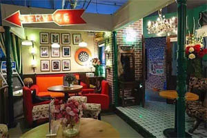

随心美食 GUANGZHOU
KINDS OF FOOD ARROUND US
游在广州
广州，这座繁华的城市极具诱惑力，然而很多时候，忙碌的工作和生活会让人疲累。无论是一个人，还是三五知己的约会，找个地方适当relax真的很有必要，咖啡店是个不错的选择。在广州的闹市里，就深藏着几家特色的咖啡店，它们都舒服到让你不想回家。
GREEN HOUSE(一家卖杂货的咖啡店)
这是一家卖杂货的咖啡店，所谓的杂货，都是店主从外地带回来的独特旧物，让你在享受咖啡的同时，也能找到你心水的物品。冰滴咖啡不加奶，是纯到不能再纯的黑咖啡，不知店主施了什么魔法，让一杯原本沉闷的咖啡竟变得活泼起来。地址：海珠区江南西青凤大街5号102 人均：25元
乔蔓咖啡(民国花园别墅的建筑风)
这座小洋楼的前身是孙中山先生的私人秘书谢老先生的公馆，历经多少个春秋，这座怀旧感浓厚的建筑依然还在。沙发超级适合葛优瘫，坐下去根本不想起来。地址：中山三路东平大马路3号(近烈士陵园) 人均：77元

老友记主题咖啡厅(有一种友情，叫老友记)
爱一部剧，开一家店，有一个美剧《老友记》的死忠粉，就高度还原了在剧中主角们常年集聚地Central Perk。橙色沙发、高脚桌椅、表演台、让人感到舒适的橘色灯光.....不管你是不是这部剧的剧迷，能和三五知己在这样舒服的地方谈天说地，已经够满足。地址：华强路2号富力盈丰108号 人均：63元
广州是个包容性的城市,这也同时体现在美食上面,从高大上的高端食府,到平靓正的街头小吃,从地道的中国各地美食,到缤纷多彩的异域美味,无不诱惑着吃客们的舌尖。
云吞面
是广州人对馄饨的俗称，在上下九路、西华路、人民路一带都很多这种卖云吞面的小吃店。由于此品汤味浓郁，云吞皮薄馅多，蛋面有弹牙之感，因而成为广州人早餐、小点的美食。最佳体验店：宝华云吞面
爽鱼皮
爽鱼皮也是到广州不可错过的一道美食，它是用魭鱼皮制作，冰冻使鱼皮保持了爽脆的口感，加上配料味道一流。要吃它，肯定是不能错过广州陈添记了，这里有全广州最好吃的爽鱼皮，人气从来都超级旺。最佳体验店：陈添记
双皮奶
炖好后牛奶双层凝固，色洁白，呈膏状，半固体，光洁平滑，奶皮不离碗边，风味甜香软滑，营养丰富，具润肺养颜之效。炖好后牛奶双层凝固，色洁白，呈膏状，半固体，光洁平滑，奶皮不离碗边，风味甜香软滑，营养丰富。最佳体验店：南信牛奶甜品专家
艇仔粥
艇仔粥以新鲜的河虾或鱼片作配料，后来还增加了海蜇、炒花生仁、凉皮、葱花、姜等，吃前当即煮粥滚制，芳香扑鼻，热气腾腾，十分鲜甜。在广州很多地方都可品尝到这种广州特有的粥品，用料十足，非常美味。最佳体验店：莲香楼
肠粉
广州的一种特色小吃，是广州人爱吃的小食，也是广州大小茶楼、酒家早茶夜市的必备之品。因形似猪肠，广州人也称之为猪肠粉。据说，在抗日战争时期由泮塘荷仙馆创制，现小食店、茶楼、酒家、宾馆均有供应。最佳体验店：银记肠粉
有句广州俗话讲得好,食得是福。而且广州最主要嘅系，民以食为天。广州作为一个美食天堂，各种菜色菜系都超级丰富！在如今这一辈人的眼中，老字号这样卓越的称谓，是记录着几代人的心血与成就。而说到广州老字号的餐饮，其实就是年龄够大（老），重游了一遍全城，为大家细数5家耀眼的老字号店！
大同酒家(饱览江景的老字号酒家)
开设时间为1938年，与大公餐厅和大三元酒家合称“三大”的大同酒家，前身为广州园酒家，于1938年由日本人中泽亲礼等人开设。它和其他几家的老字号不同，大同酒家坐落在珠江旁边，景色好，可以一边喝茶一边看风景。食物平价且味道很好，所以这里早茶时间也是特别火爆。地址：沿江西路63号大同酒家1楼(近南方大厦) 人均：52元
陶陶居(广州现存最古老的酒楼)
广州现存的最古老的酒楼，到如今至少已有120多年历史了。陶陶居这个百年老店、国家级酒楼的招牌，可谓是名扬四海哦~据闻“陶陶居”这三个字是康有为写的用的是“石门铭”碑法，康有为当初在广州万木草堂讲学时，常去一间茶室喝茶，便为那个茶室题写了“陶陶居”这一牌匾。地址：新港中路356号丽影广场C区三楼 人均：85元
莲香楼(有“莲蓉第一家”的美誉的老茶楼)
“莲香楼”三个雄浑大字，乃是出自清末南海翰林大学士陈如岳之手迹。开业于1889年的莲香楼，坐落于广州市城西，一共有三层楼：首层主要卖鸡仔饼、嫁女饼等饼类，二楼布满历史味道装饰物的是酒楼入口。莲香楼店里几乎都是饮茶看报的老百姓，嘈杂之中透出广州的市井文化。地址：第十甫路67号莲香楼总店二楼营业部 人均：60元
泮溪酒家(广州四大园林酒家之一)
泮溪酒家是从60年代初成为广州最宏大,最负盛名的园林建筑酒家。这里是1000多年前南汉王刘长的御花园“昌华苑”，也是“白荷红荔、五秀飘香”的“荔枝湾”。整个酒家由假山鱼池、曲廊、湖心半岛餐厅，和海鲜舫等组成。地址：龙津西路151号(近荔枝湾) 人均：63元
广州酒家(素有“食在广州第一家”的美誉)
一家餐厅的名字与城市同名,便可见其分量与气度了.在广州花式早茶里,最令人印象深刻的,大门缓缓铺开,不管是老人们、青年人,都蜂拥而入，瞬间满座！广州酒家是粤菜的代表,“广州十大名鸡”之一,有近80年传承历史的“广州文昌鸡”,就是代表之一！还有"广东叉烧"、"麻皮乳猪",以及"香酥鸭"等~地址：文昌南路2号 人均：93元